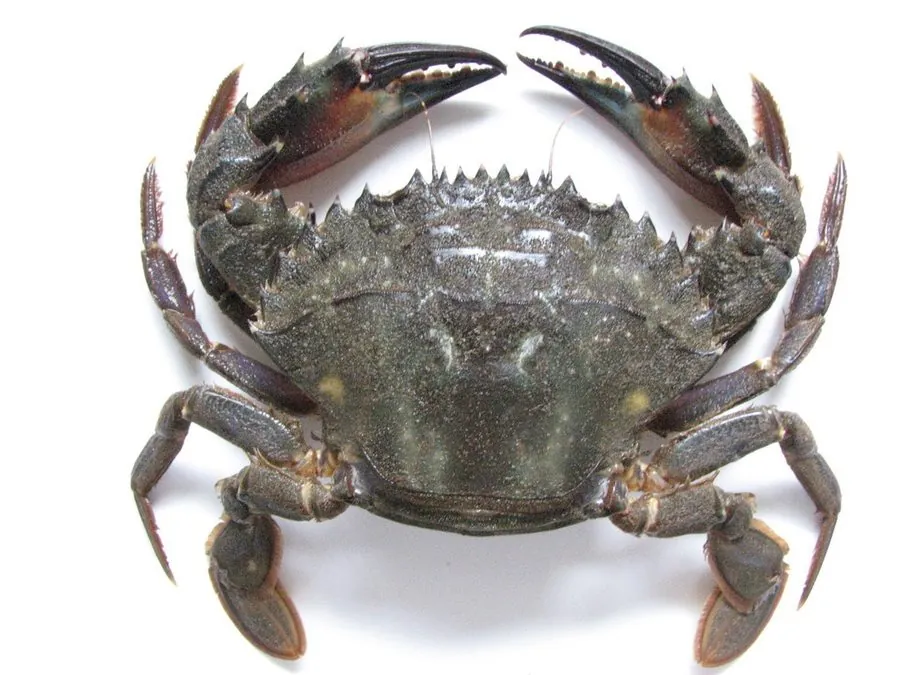

甲壳动物 · 动物界
日本蟳 Charybdis japonica

甲面有锯齿、螯足粗壮的常见海蟹，栖息在岩礁和泥沙底，中国沿海常见，是沿海重要的食用蟹类和渔业对象。
- 分类
- 门节肢动物门纲软甲纲目十足目科梭子蟹科属蟳属
- 栖息环境
- 潮间带至浅海的岩礁、砾石和泥沙底，昼伏夜出
- 地理分布
- 中国沿海、日本、朝鲜半岛和东南亚
- 保护级别
- 暂无评估
物种志
日本蟳头胸甲呈横椭圆形，表面隆起，甲面有颗粒和横向皱纹，前侧缘有锯齿，螯足粗壮不对称，指节黑色，步足扁平。体色青褐或暗绿色，与海底环境相近。
它栖息在潮间带至浅海的岩礁、砾石和泥沙底，昼伏夜出，捕食贝类、小鱼、虾蟹和多毛类，性情凶猛，会用螯足夹击。日本蟳分布在中国沿海、日本、朝鲜半岛和东南亚，是沿海常见的食用蟹类。雌蟹产卵量较大，幼体浮游后沉底发育。它以海捕为主，也有一定养殖规模；在岩礁区赶海时容易被它的螯足夹伤，需要戴手套操作。日本蟳在岩礁区数量较多，是赶海时最常见的蟹类之一，也是底栖鱼类和章鱼的食物，对维持岩礁生态平衡有一定作用。
形态与习性
- 食性捕食贝类、小鱼、虾蟹和多毛类
- 体型头胸甲宽约 7–10 cm
- 识别甲面有横向皱纹和锯齿，螯足指节黑色
- 习性昼伏夜出，性情凶猛，会夹击入侵者
- 繁殖雌蟹产卵量较大，幼体浮游后沉底
- 经济沿海常见的食用蟹类，以海捕为主
趣味知识
- 日本蟳的螯足很有力，赶海时被夹到会很疼，要戴手套。
- 它的甲面有横向皱纹和锯齿，是辨认它的重要特征。
- 日本蟳喜欢躲在岩礁缝里，夜里才出来捕食。